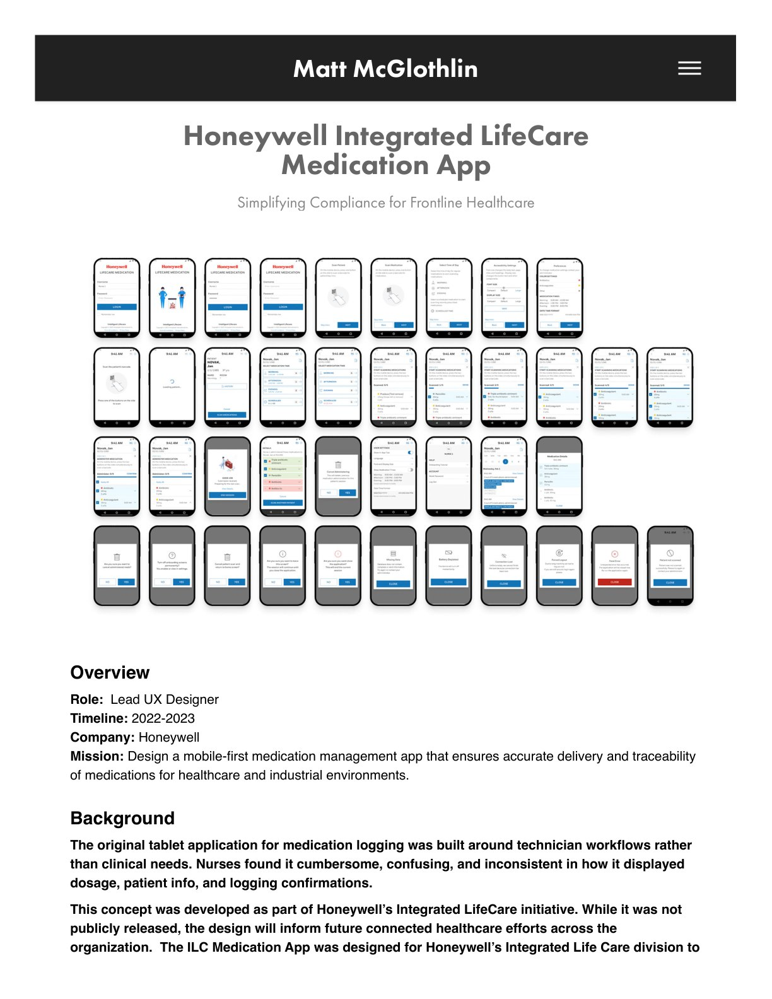
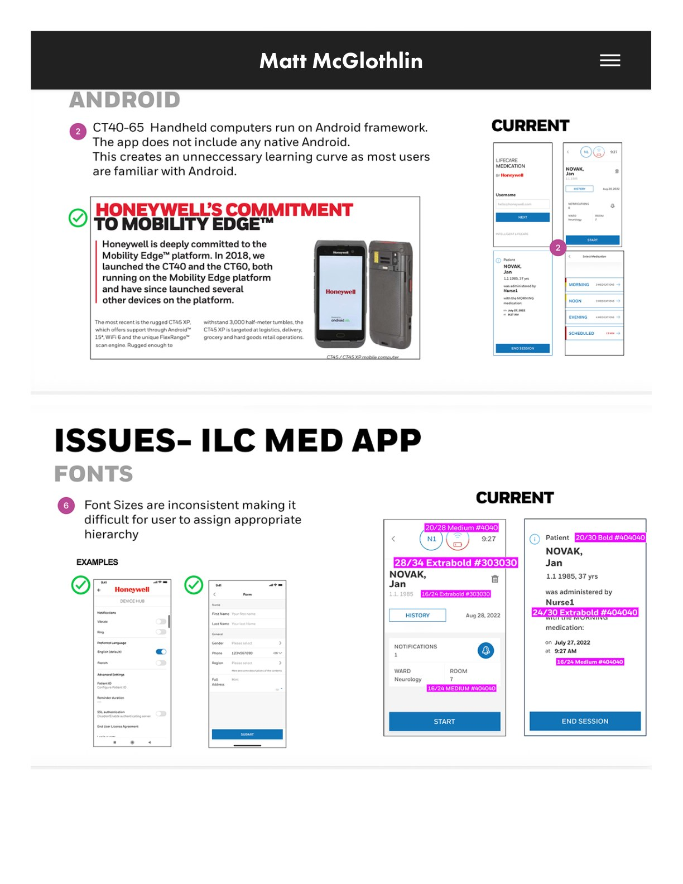
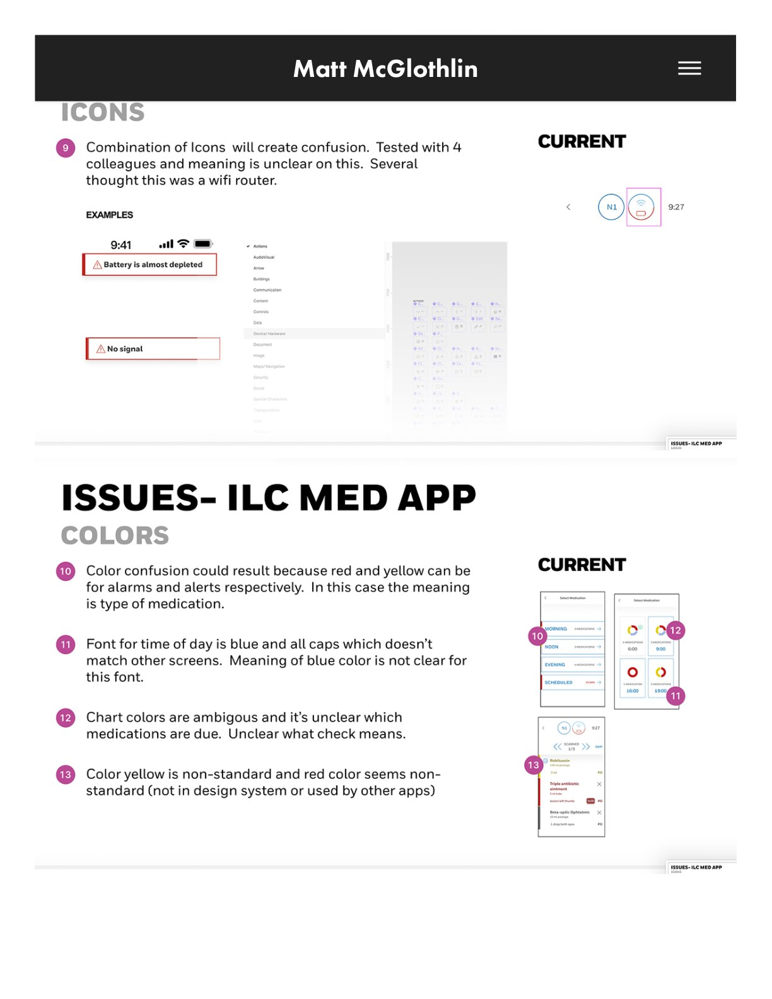
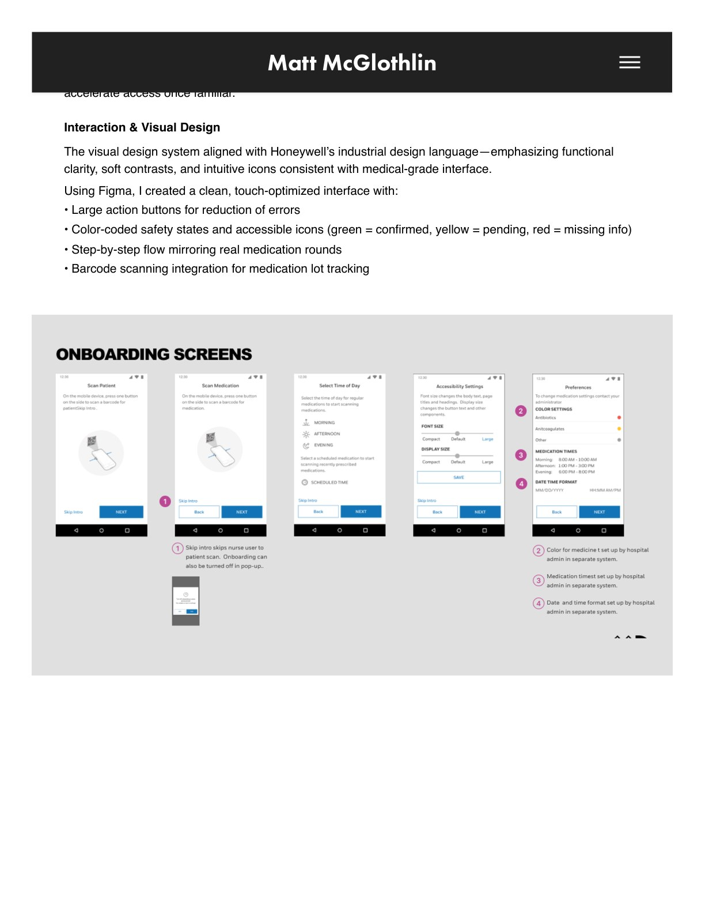
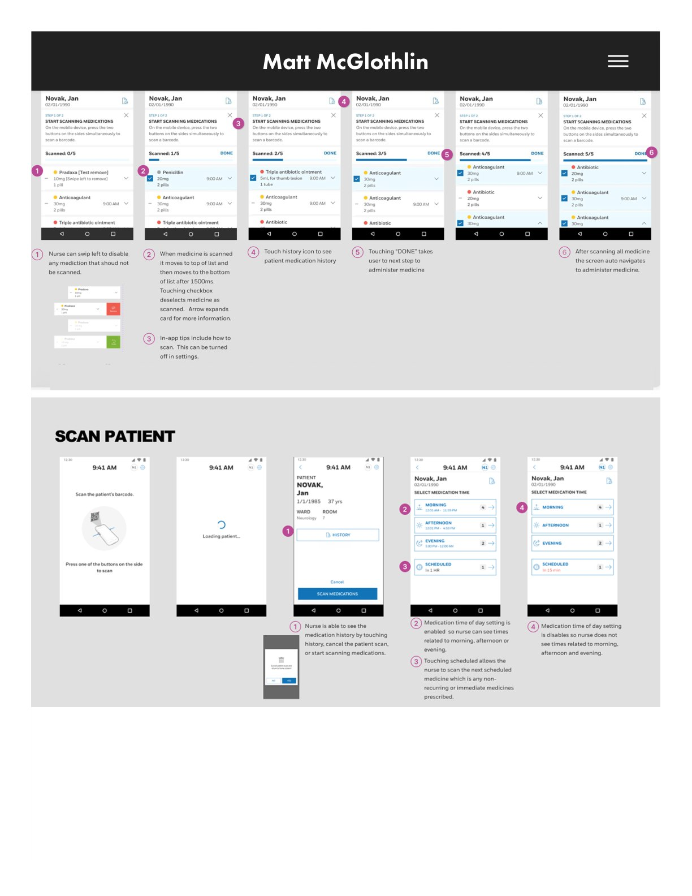
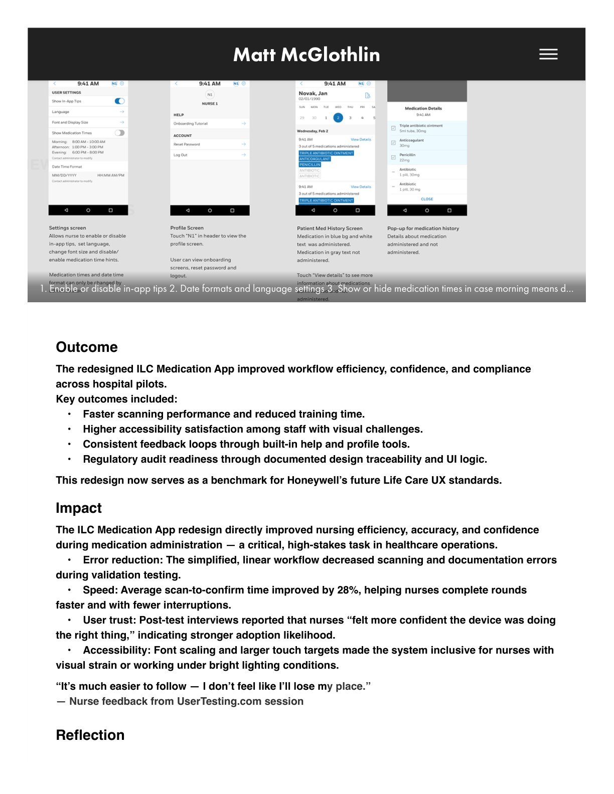

Honeywell · Mobile · Healthcare · Accessibility
LifeCare Medication App
A mobile-first medication management app that ensures accurate delivery and traceability — simplifying compliance for frontline healthcare.
The Challenge
The original tablet application for medication logging was built around technician workflows rather than clinical needs — nurses across pilot hospitals found it cumbersome, confusing, and inconsistent in how it displayed dosage, patient info, and logging confirmations.
The Redesign
As Lead UX Designer (2022–2023) I redesigned the user flow, onboarding experience, and accessibility framework for Honeywell handheld scanners used to confirm dosage, timing, and compliance at the bedside — grounded in heuristic evaluation against SUS standards, field research, and UserTesting-validated prototypes.
The Impact
Fewer scanning errors, faster task completion, and stronger compliance readiness — with consistent feedback loops, high-contrast visual design, and step-by-step confirmation flows nurses could trust at the point of care.





